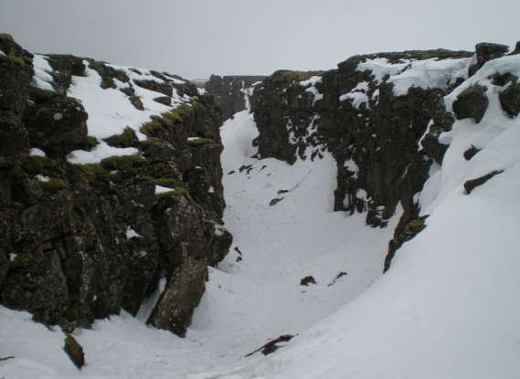

In the oceans, plates move apart at mid-ocean ridges, causing volcanoes, creating openings for lava to rise upward, erupt, and cool.
As more lava erupts and pushes the original seafloor outward, the seafloor spreads and forms new oceanic crust.
This is why there is a mountain range running through the oceans.
The plates pulling apart cause earthquakes.
Most mid-ocean ridges are located deep below the sea.
The island of Iceland sits right on the Mid-Atlantic ridge.
Mid Atlantic Ridge by Mangwanani, public domain
The rift valley in Iceland is part of the Mid-Atlantic Ridge.